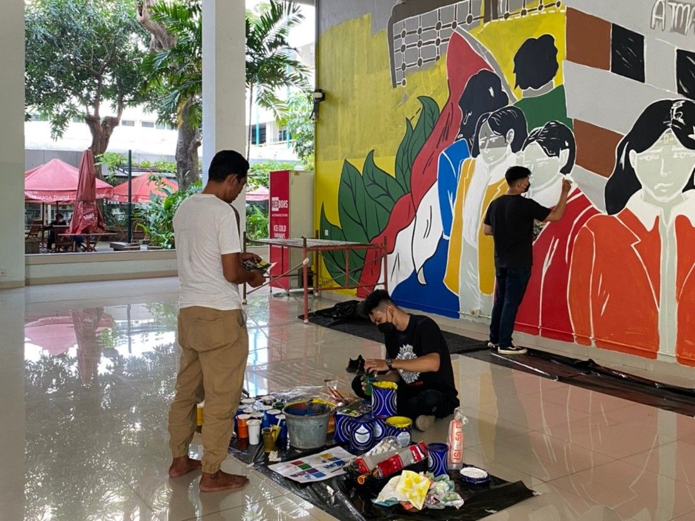
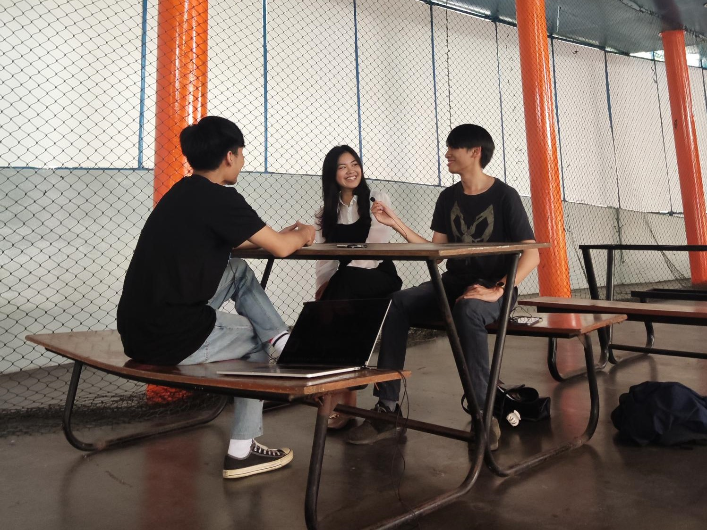
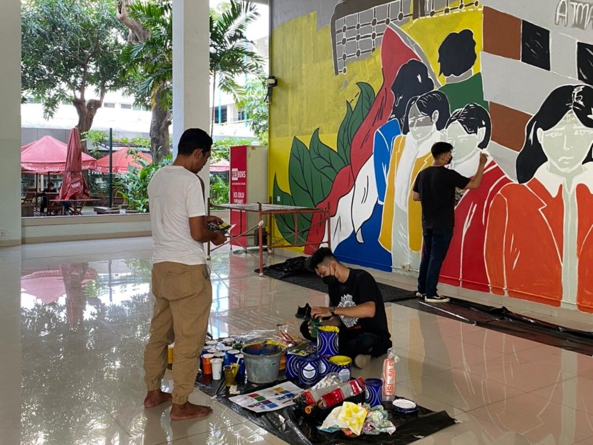
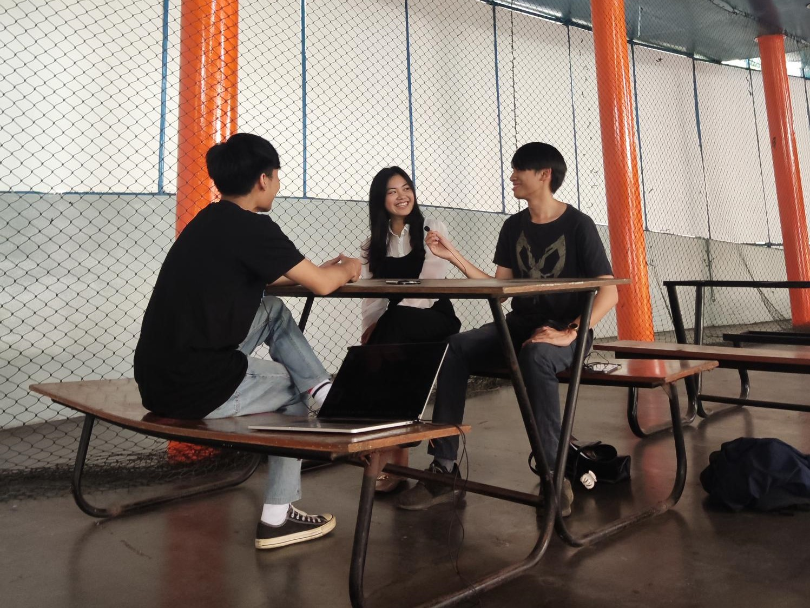

Atma Jaya Christmas Carol
Festival Mural
Mahasiswa Talks
 



Tujuan Kegiatan
Mempererat ikatan tali persaudaraan dalam kristus dan menjalin rasa keakraban antar Civitas Akademica Universitas Atma Jaya dengan Universitas-universitas yang berada di Jakarta.
Deskripsi Kegiatan
Terwujudnya mahasiswa Unika Atma Jaya yang sesuai dengan Acara akan dihadiri Civitas Academica Atma Jaya dan Universitas-universitas se-Jakarta. Acara akan diawali dengan Perayaan Ekaristi yang akan dipimpin oleh Romo. Setelah itu akan dilanjutkan dengan Ramah tamah dan juga persembahan acara dari UKM.
Tujuan Kegiatan
a. Memberi wadah untuk mahasiswa Universitas Katolik Indonesia Atma Jaya untuk mengekspresikan diri melalui mural.
b. Meningkatkan kesadaran mahasiswa melalui mural terkait pentingnya menjaga lingkungan.
Deskripsi Kegiatan
Terwujudnya mahasiswa Unika Atma Jaya yang sesuai dengan pembuatan mural di tiga kampus Unika Atma Jaya melibatkan mahasiswa dalam pembuatan desain dan mural.
Tujuan Kegiatan
Mendengar aspirasi dari mahasiswa Unika Atma Jaya yang berprestasi di bidang akademis maupun non akademis.
Deskripsi Kegiatan
Membuat podcast berisikan tanya jawab saran kegiatan untuk BEM KM UAJ serta tips and tricks cara mencapai prestasi yang digapai mahasiswa berprestasi di bidang akademis maupun non akademis.